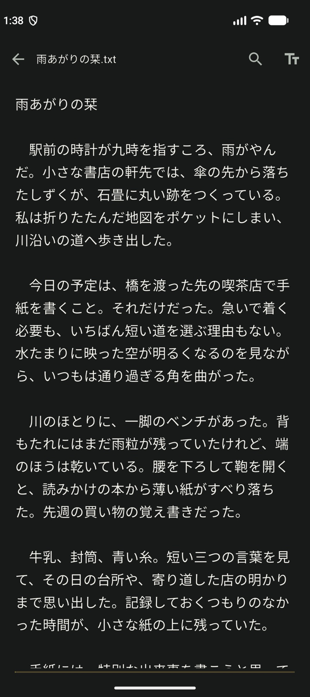
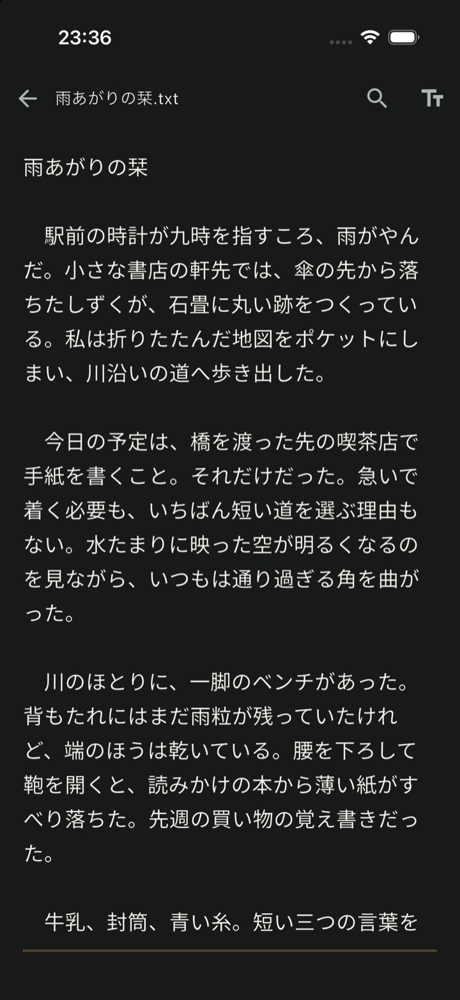
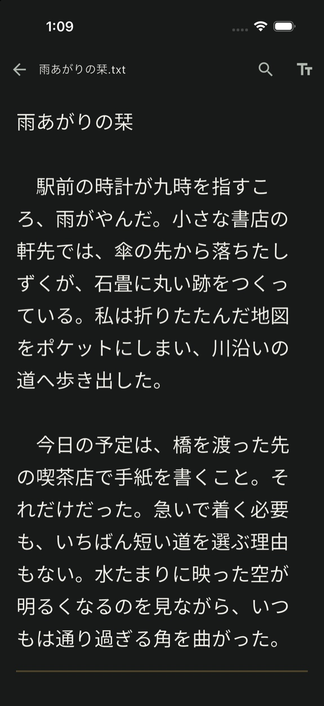
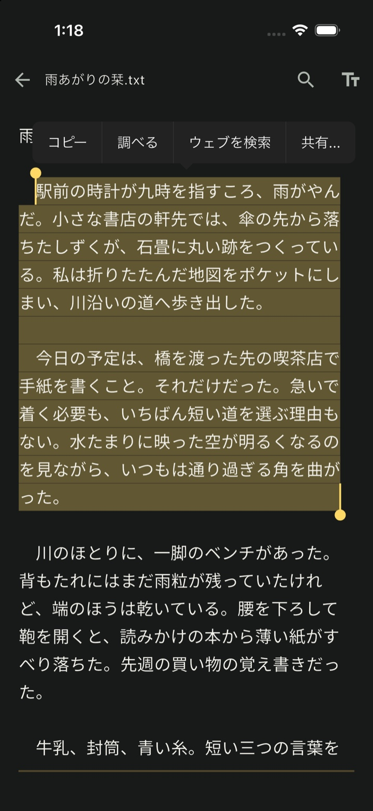
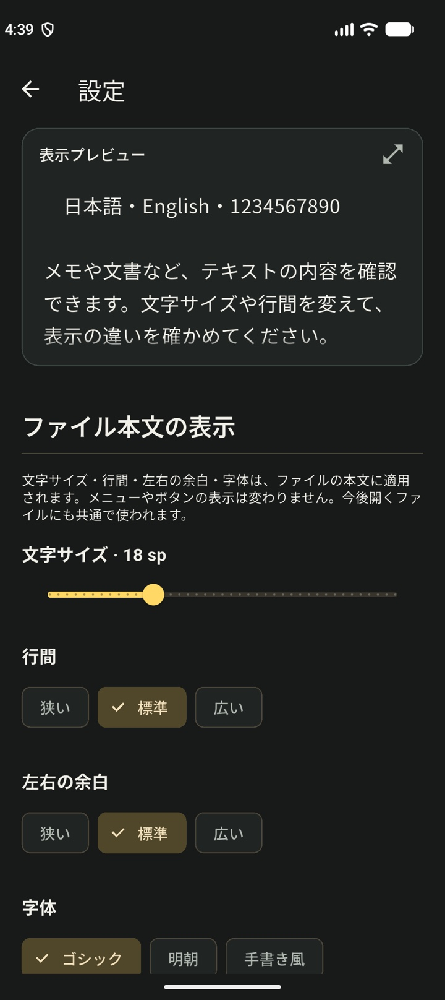
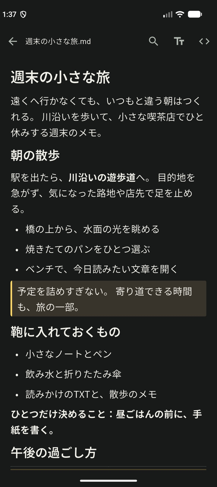
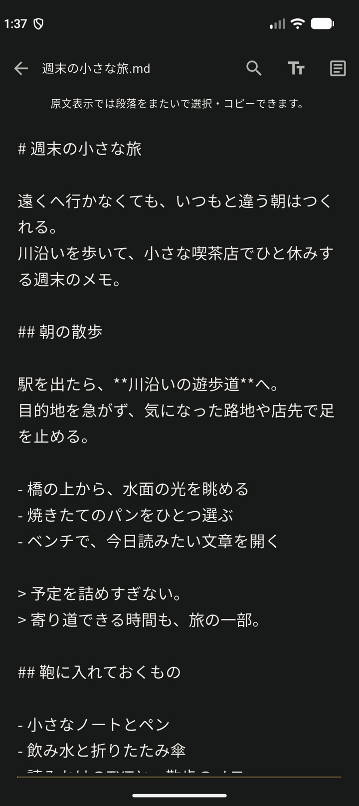
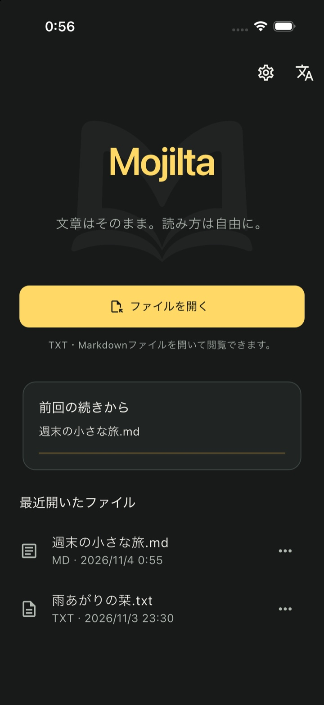

TXT / Markdownリーダー
文章はそのまま。
読み方は自由に。
スマートフォンで、
2本指で文字サイズを変え、気になる段落をコピー。元ファイルを書き換えずに読める、閲覧専用リーダーです。
使い方を見る- 元ファイルの編集なし
- 会員登録不要

端末にある文章を、開いて読む。
.txt.md.markdown
01 文字サイズ
2本指で、
読みたい大きさに。
指を広げたり、縮めたりするだけ。文字の大きさに合わせて行が折り返されるので、本文の表示をその場で調整できます。
同じTXTを18sp・24spで表示した静止画の比較です。


02 選択・コピー
段落をまたいで、
そのままコピー。
TXTを長押しして、必要な範囲を選択。段落をまたぐ文章も、まとめてコピーできます。
PCで書いた原稿を、移動中に読み返す。気になった文章はコピーして、いつものメモへ貼り付けられます。
Markdownでブロックをまたいでコピーするときは、閲覧専用の原文表示を使います。
Markdownの表示を見る
03 表示設定
字体も、
行間も、余白も。
明朝で原稿を読み返す。行間を広げて小説を読む。設定のサンプルを見ながら、自分に合う表示を選べます。
- 字体
- ゴシック・明朝・手書き風
- 行間・余白
- それぞれ3段階で調整
- 外観
- ダーク・ライト・システム
選んだ表示は、これから開くファイルにも。ファイルを開く前に、拡大プレビューでも確認できます。

04 Markdown
読みやすい形と、
記法のある原文と。
見出しや箇条書きのあるメモは、整形表示で確認。記法を含めてコピーしたいときは、閲覧専用の原文表示へ切り替えられます。
ブロックをまたぐ選択・コピーは原文表示で。どちらの表示でも、元ファイルは書き換えません。


05 履歴から再開
続きは、
履歴から。
長いTXTを読みかけで閉じても、最近開いたファイルから、前回読んでいた位置付近へ戻れます。
気になる言葉を探したいときは、ファイル内検索で前後の一致箇所へ。読み返したいところを見つけられます。
継続してアクセスできるファイルが対象です。元ファイルの移動・削除やアクセス権の変更、一時アクセスのファイルでは再選択が必要です。

YOUR FILES, ON YOUR PHONE
手元のファイルを、
手元で読む。
購入後、購入状態を確認済みの端末では、ダウンロード済みのTXT・Markdownをオフラインでも読めます。アプリ内の会員登録は不要です。
本文をMojiltaのサーバーへ送る機能や文書のクラウド同期はありません。購入・初回の購入確認・復元には通信が必要です。クラウド上の未取得ファイルや、タップして開く外部リンクにも通信が必要になることがあります。
06 料金・購入
サンプルで試して、
一度の購入で。
無料ダウンロード後、サンプルのTXT・Markdownや表示設定で読み心地を確認。自分のファイルを開くときに、Mojiltaを買い切りで購入する仕組みです。
現在、ストア公開準備中です。
自分のTXT・Markdownを読む
買い切り480円
月額料金・自動更新はありません。
Mojiltaの会員登録は不要です。
- 購入前
- サンプルのTXT・Markdownを閲覧。字体・文字サイズ・行間・余白などの表示設定を試せます。
- 購入後
- 自分のTXT・Markdownを開き、検索・コピーや履歴からの再開も使えます。
07 対応形式・使い方
よくある質問
購入前に試せますか？
無料ダウンロード後、サンプルのTXT・Markdownの閲覧と表示設定を試せます。自分のファイルを開くには、日本向け480円の買い切り購入が必要です。月額料金・自動更新はありません。詳しくは料金・購入についてをご確認ください。
どのファイルを開けますか？
TXT（.txt）とMarkdown（.md / .markdown）に対応しています。ファイルサイズの上限は8 MiBです。PDFやEPUBには対応していません。端末の標準ファイル選択から、読みたいファイルを開きます。
元のファイルは変わりませんか？
Mojiltaは閲覧専用です。文字サイズや行間を変えても、元ファイルの内容は変わりません。本文の編集・上書き・削除・改名機能はありません。
Markdownの文章もコピーできますか？
Markdownでブロックをまたいでコピーするときは、閲覧専用の原文表示に切り替えて範囲を選択します。TXTは長押しして、複数の段落をまとめて選択・コピーできます。
日本語の文字コードに対応していますか？
UTF-8（BOM付きも含む）と、BOM付きUTF-16に対応しています。Shift_JIS系のファイルは、文字コードを手動で選び直して開けます。文字コードの完全な自動判定は行いません。
Markdown内の画像も表示されますか？
画像は表示せず、代わりのアイコンを表示します。外部リンクは、利用者がタップしたときだけ外部アプリで開きます。
前回の続きから読めないときは？
元ファイルが移動・削除された場合や、アクセス権が失われた場合、一時アクセスのファイルは再選択が必要です。継続してアクセスできるファイルは履歴から前回読んでいた位置付近へ戻れます。Markdownの整形表示では、おおよその位置を復元します。
アカウントやインターネット接続は必要ですか？
Mojiltaの利用にアプリ内の会員登録・ログインは不要です。購入・初回の購入確認・復元には通信が必要です。購入済みの利用権が端末に保存されていれば、ダウンロード済みのファイルはオフラインで開けます。クラウドのファイル提供元では、そのサービスへのログインやファイルの取得に通信が必要な場合があります。
本文や履歴はどこに保存されますか？
本文をMojilta独自のサーバーへ送る機能や文書のクラウド同期はありません。設定と最近開いたファイルの情報・閲覧位置は端末に保存します。購入の確認・復元では、RevenueCatとストアで匿名の識別子や購入情報を処理します。本文・ファイル名・閲覧履歴はRevenueCatへ送りません。詳しくはプライバシーポリシーをご確認ください。
Mojilta